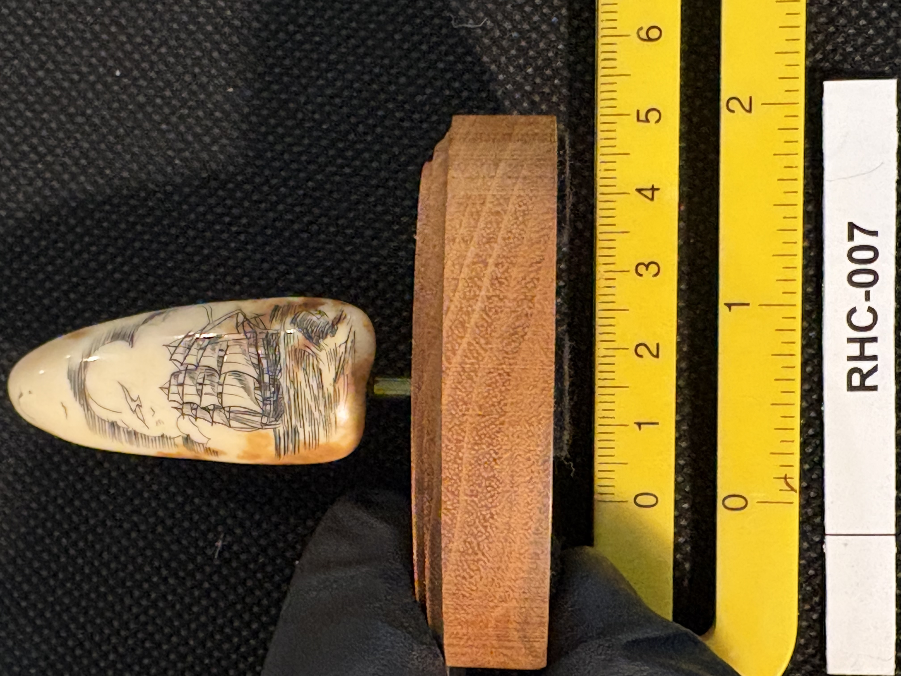
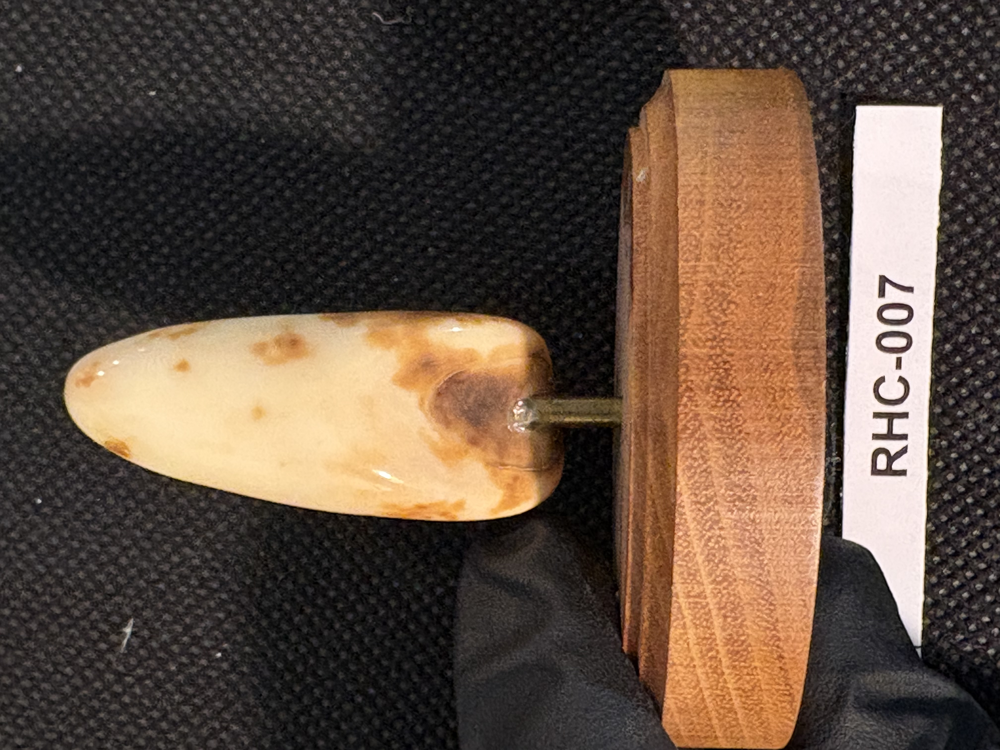
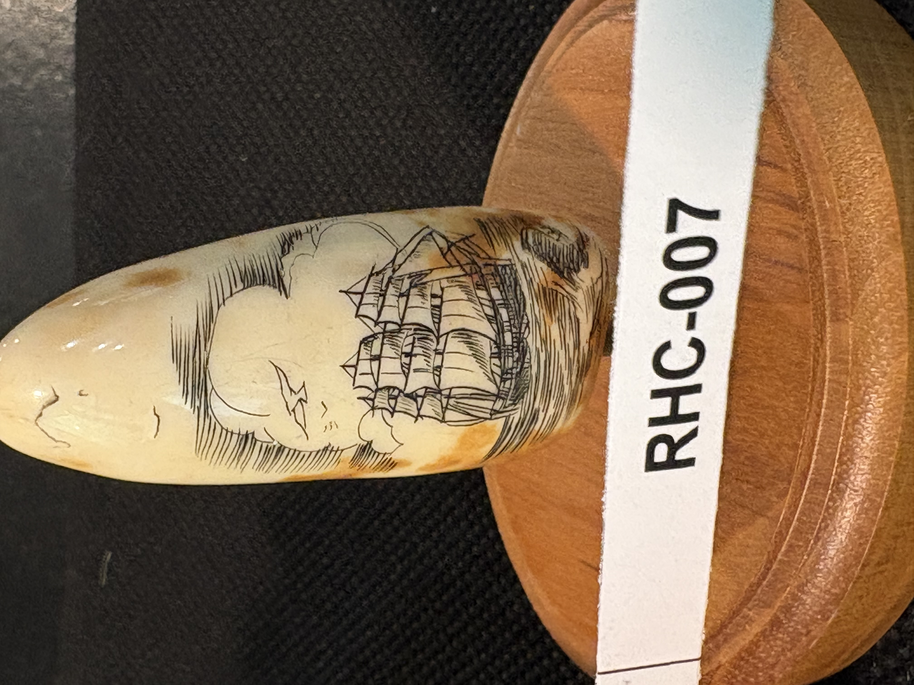

RHC-007 reviewed
Engraved Tall Ship Canine Tooth (Unknown Origin) on Turned Oval Wood Base



- Object Type
- Engraved tooth, mounted on a turned oval wood display base via a short metal pin
- Material
- Canine tooth of unknown origin (per Richard H. Cornelia — too small to be a sperm whale tooth, contrary to earlier presumption; species not identified). Base is a polished, lathe-turned solid oval wood puck.
- Dimensions (cm)
- length: 6.0cm — Tooth length (~6.0cm) measured off the cm scale; width and base dimensions not separately measured — ruler only runs along one axis in these photos.
- Subject Matter
- A full-rigged tall ship (three-masted, square-rigged, sails set) under sail, rendered in black ink line work with surrounding wave/cloud line work — a classic 'ship portrait' scrimshaw motif.
- Artist Attribution
- unknown
- Date / Period
- Undated; no visible signature
- Mount / Display Stand
- Mounted for display on a turned oval wood base via a short metal pin at the tooth's root end — a third, more finished mount style compared to the thinner disk-and-rod mounts on RHC-005 and RHC-006.
- Color / Technique
- Traditional black ink line scrimshaw engraving
- Condition Notes
- Surface shows natural mottling and brown spotting typical of aged tooth material; no visible cracks or losses. Not physically examined.
- Distinguishing Features
- Classic ship-portrait subject matter, distinct from the wildlife themes seen in RHC-001, 004, 005, and 006. Mount style (turned oval wood base) is more refined than the other rod-mounted items so far — worth watching for whether this matches other pieces later in the set.
- Legal / Regulatory Status
- Tooth material presumed sperm whale (same flag as RHC-001) — undated, so pre/post-1972 MMPA status can't be determined from the piece itself. Flag for legal review before any loan/sale; not a legal determination.
- Rights / Copyright
- No signature identified; copyright status undetermined.
- Keywords
- ship portrait tall ship sailing vessel engraved tooth wood base mount scrimshaw
- Status
- reviewed
- Date Cataloged
- 2026-07-15
Open Research Questions
Research finding (phase 3, 2026-07-15): No specific ship type/rig identification attempted from general web search; would need a direct visual comparison against period tall-ship rigging references rather than a text search. Per Richard H. Cornelia (written review of printed catalog booklet, 2026-07-19): "Same as above" (referring to the RHC-006 correction): too small to be a sperm whale tooth; a canine tooth of unknown origin.